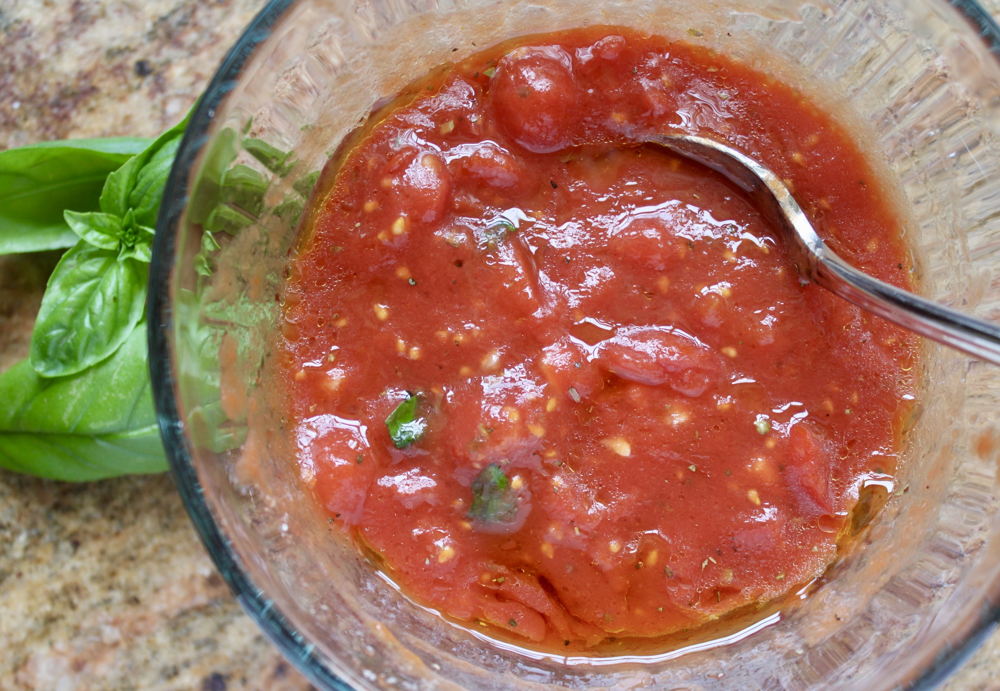

EN Pizza sauce | PL Sos do pizzy

EN
Description
Basic yet most authentic pizza sauce recipe out there.
The key in this recipe are good quality canned tomatoes, preferably San Marzano.
Ingredients
- 400 g can whole tomatoes
- 4 g salt
- 1 tablespoon olive oil
- few leaves basil
- pinch dried oregano
Steps
- Transfer tomatoes from can to mesh strainer and mash them up by hand. Don't use any blender as the would blend seeds which can give the final product a bitter taste.
- Transfer smashed tomatoes to a clean bowl. You can use some left over juice to thin out the sauce if it is too thick.
- Add salt and mix.
- Add olive oil, basil and dried oregano. Mix again. The sauce is finished!
- If you are a garlic maniac you can add one clove as well, yet the sauce will not taste so fresh!
PL
Opis
Prosty, ale najlepszy i najbardziej autentyczny przepis na sos do pizzy, jaki znajdziesz w Internecie.
Kluczowym składnikiem są tutaj dobrej jakości pomidory w puszce, najlepiej odmiany San Marzano.
Składniki
- 400 g puszka całych pomidorów
- 4 g soli
- 1 łyżka oliwy z oliwek
- parę listków bazylii
- szczypta suszonego oregano
Kroki
- Przenieś pomidory z puszki na sito i rozgnieć je dłońmi. Nie używaj do tego blendera, gdyż może on zgnieść nasiona, które nadadzą sosowi gorzkiego smaku.
- Przenieś rozgniecione pomidory do czystej miski. Możesz użyć pozostałego soku do rozrzedzenia sosu, gdy ten będzie zbyt gęsty.
- Dodaj sól i wymieszaj.
- Dodaj oliwę, bazylię i suszone oregano. Jeszcze raz wymieszaj. Sos gotowy!
- Jeśli nie wyobrażasz sobie sosu bez czosnku, możesz dodać jeden ząbek, jednak sos nie będzie miał wtedy tak świeżego smaku!